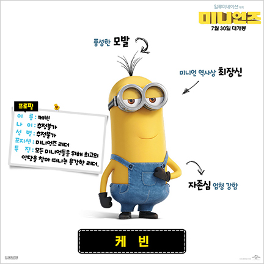
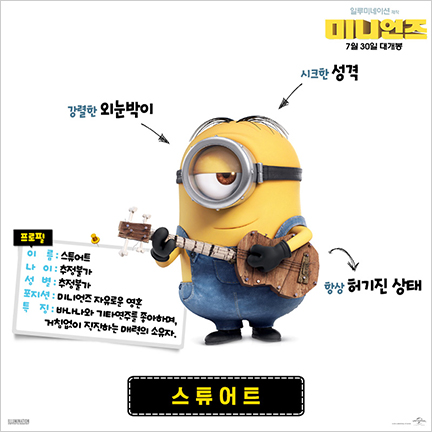
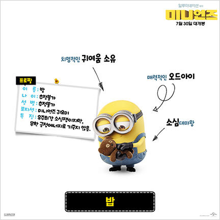

characters
미니언즈 2 주요 캐릭터
- 케빈
- 스튜어트
- 밥

큰 형 포지션의 케빈
슈퍼배드 시리즈의 등장인물. 900마리의 미니언 중 하나로, 길쭉한 체형을 지녔다. 자존심 강하면서도 어른스러운 성격.
- 케빈
- 스튜어트
- 밥

우쿨렐레 연주하는 스튜어트
900마리의 미니언 중 하나이자 그루의 최측근으로, 평범한 체형과 외안을 지녔다.
- 케빈
- 스튜어트
- 밥

머머리 밥
짤뚱한 체형에 오드아이를 지녔다. 선천적인 대머리인 건지 아니면 어려서 머리카락이 아직 안 난건지는 몰라도 머리가 민둥민둥하다.